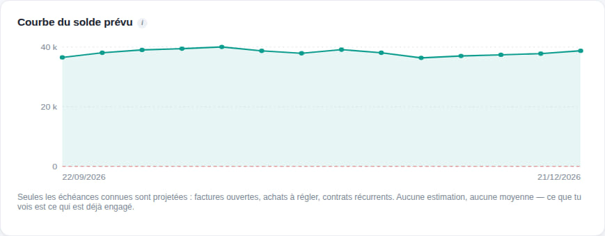
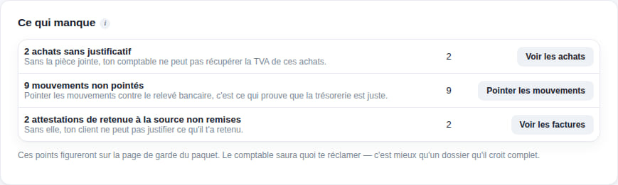

Accueil Visite guidée
Visite guidée
Une affaire, du premier prix à la déclaration.
Sept écrans réels, dans l'ordre où ils arrivent. Pas une liste de fonctions — celle-là est ailleurs — mais l'enchaînement : ce que vous tapez une fois, et tout ce qui en découle sans que vous ayez à le ressaisir.
Les captures viennent du jeu d'exemple livré avec l'application : les chiffres sont inventés, les écrans sont les vrais.
1 sur 7
Le client demande un prix
Vous tapez le devis à gauche ; le document que le client recevra se dessine à droite, pendant la frappe.
Le catalogue propose vos prestations et leur prix. Le timbre, la TVA et la retenue à la source se calculent seuls. Chaque champ porte une bulle « i » qui explique à quoi il sert — y compris les mots qu'on n'ose pas demander.

2 sur 7
Le client dit oui
Le devis devient facture d’un clic — même client, mêmes lignes, un numéro neuf.
Une facture émise se verrouille : on ne la modifie plus, on la corrige par un avoir. Et le statut — payée, partielle, en retard — se déduit des règlements. Vous n'avez aucune case à cocher, donc aucune case à oublier.

3 sur 7
Il ne paie pas
Les impayés remontent seuls, avec la relance déjà rédigée.
Premier rappel, deuxième, mise en demeure : le texte est écrit, vous n'avez qu'à l'envoyer — ou à noter que vous avez téléphoné. L'historique garde ce qui a été fait, et quand.

4 sur 7
Vous voulez savoir si ça passe
La courbe du solde prévu, et le jour où il passe sous zéro.
Elle ne compte que ce qui est engagé : vos factures à encaisser, celles de vos fournisseurs à régler, les salaires. Un total ne dirait rien — un solde peut être bon au début et à la fin, et négatif au milieu. C'est précisément ce qu'on veut voir venir.

5 sur 7
La fin du mois arrive
La TVA du mois : collectée, déductible, et le crédit reporté du mois d’avant.
La déclaration porte sur un mois, jamais sur l'année : additionner les mois donnerait un chiffre faux, à cause des reports. Les douze mois sont là, et chacun s'ouvre sur les pièces qui le composent.

6 sur 7
Avant d’envoyer au comptable
L’application dit ce qui manque — et chaque ligne s’ouvre sur la pièce concernée.
Un brouillon jamais émis, un achat sans justificatif, un mois pas encore clôturé. Puis un bouton fabrique le dossier : les PDF, les journaux, les écritures, dans un ZIP ordinaire que votre comptable ouvre même sans SkanFact.

7 sur 7
Et chaque matin, ça recommence
En ouvrant, vous voyez ce qui vous attend. Rien à cocher : tout se déduit de vos pièces.
Les factures en retard, les devis sans réponse, les contrats à facturer, les déclarations qui approchent, le mois à clôturer. C'est la seule page que vous êtes obligé de regarder.

Ce que vous venez de voir, vous pouvez l'essayer.
Trente jours, toutes les fonctions, sur vos vraies factures. Un jeu d'exemple est livré avec l'application pour refaire ce parcours sans rien risquer — et il s'efface d'un bouton.
Essayez-le sur vos vraies factures.
Trente jours, toutes les fonctions, sans carte bancaire. Si l’application ne vous convient pas, vous n’avez rien donné à personne.
Mac et Windows · aucune carte bancaire · vos données restent chez vous